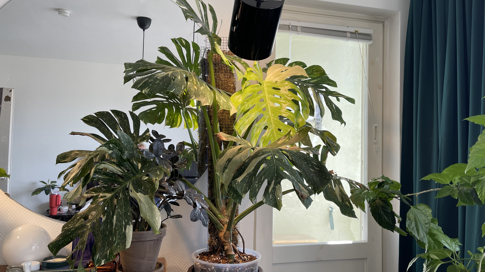
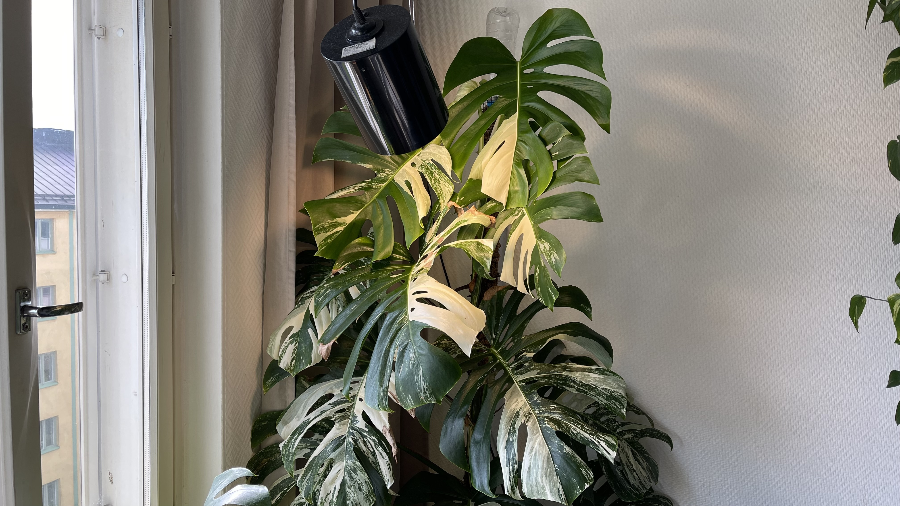
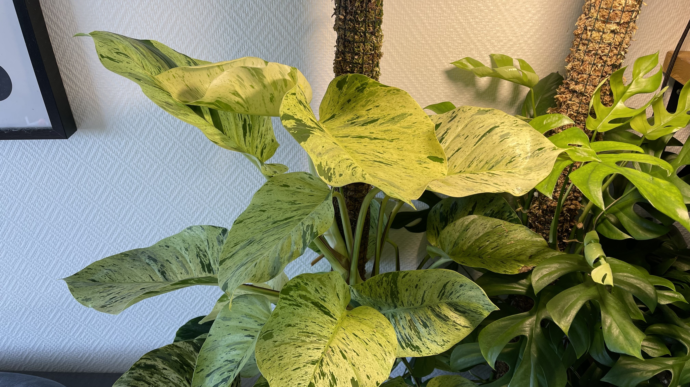
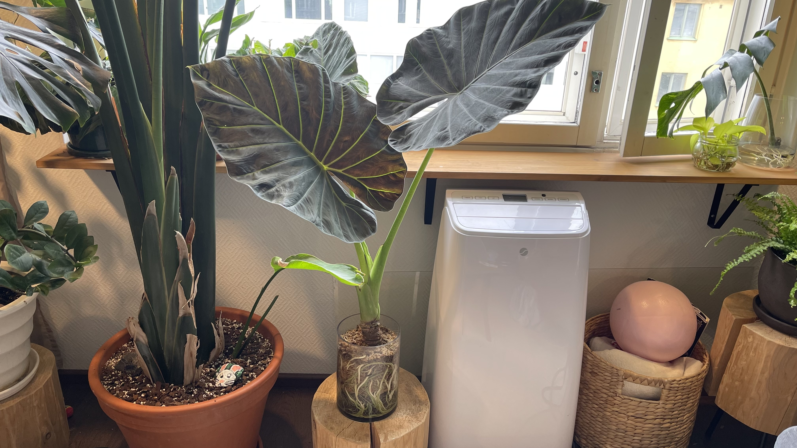
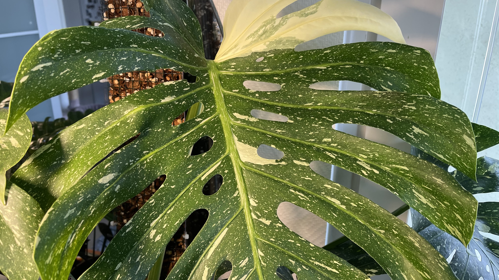
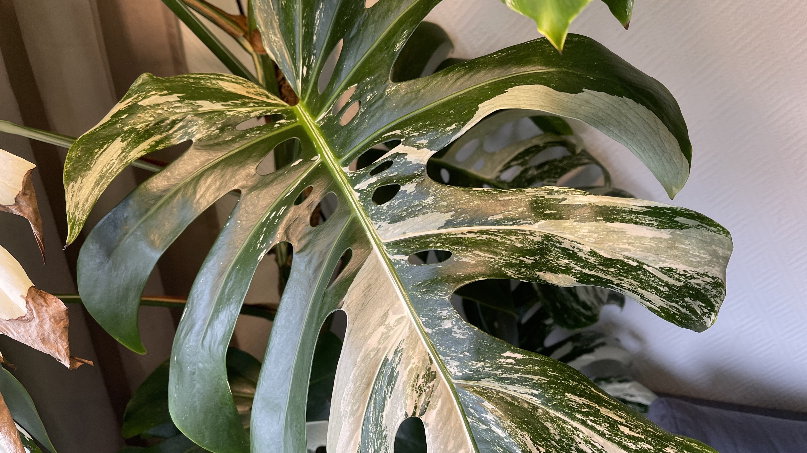
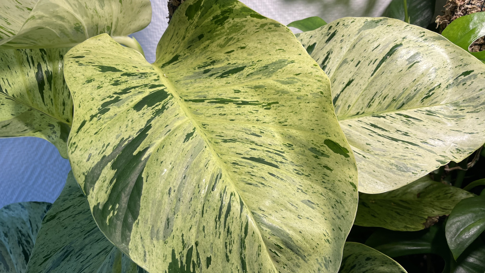
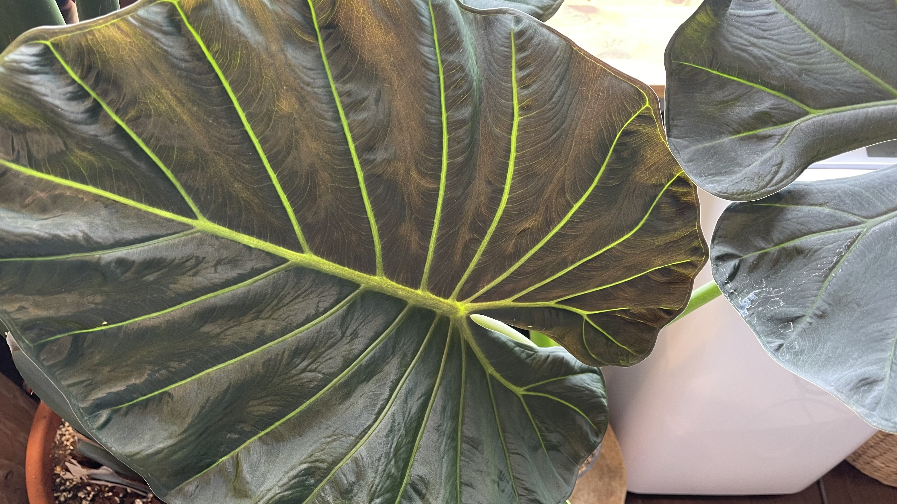

Omat suosikkikasvit
Tällä sivulla esittelen muutamia suosikkikasvejani, joita minulla on kotona. Jokaisesta kasvista on lyhyt kuvaus.

Monstera Deliciosa "Thai Constellation"

Monstera Deliciosa var. Borsigiana "Variegata Albo"

Epipremnum Aureum "Marble Queen"

Alocasia Regal Shields

Monstera Deliciosa "Thai Constellation"
Monstera Thai Constellation on erittäin näyttävä kirjavalehtinen peikonlehti. Kirjavalehtisyys viittaa kasvin värivirheeseen eli geneettiseen mutaatioon.
Missä: Lajike kehitettiin alun perin laboratorio-olosuhteissa, joissa viljelijät ja tutkijat jalostivat tätä geneettistä mutaatiota.
Milloin: Tarkka ajankohta sijoittuu yleisesti 1990-luvun loppupuolelle ja 2000-luvun alkuun. Lajiketta kehitettiin myöhemmin edelleen, ja se otettiin käyttöön laajamittaiseen kudosviljelyyn 2000-luvun puolivälissä.

Monstera Deliciosa var. Borsigiana "Variegata Albo"
Monstera Deliciosa var. Borsigiana "Variegata Albo" on suosittu kirjavalehtinen peikonlehti, jonka lehdet voivat olla vihreän, valkoisen ja vaaleanvihreän sävyisiä. Var Borsigiana viittaa kyseisen peikonlehtilajikkeen pienempään kokoon verrattuna tavalliseen Monstera Deliciosaan. Pienempi koko meinaa, että Borsigiana kasvaa nopeammin tukea pitkin pidemmillä lehtiväleillä. Borsigiana ei kumminkaan ole virallisesti tunnistettu Monstera Deliciosan alamuoto vaan sen olemassaolo on vielä väittelyn alaisena.
Alkuperä: Variegata Albo on alun perin luonnosta löytynyt värivirhe, joka on sittemmin jalostettu pistokkaista ja hedelmien siemenistä. Kyseistä kasvia ei ole jalostettu laboratorio-olosuhteissa tai kudosviljelyssä.
Lisätieto: Valkoiset lehden osat eivät yhteytä samalla tavalla kuin vihreät osat. Siksi kasvi hyötyy valoisasta paikasta, mutta suoraa paahdetta kannattaa välttää.

Epipremnum Aureum "Marble Queen"
Marble Queen on kultaköynnöksen koristeellinen lajike, jonka lehdet ovat vihreän ja kermanvaalean kirjavat.
Alkuperä: Epipremnum aureum on trooppinen köynnöskasvi, jota esiintyy luonnossa lämpimillä ja kosteilla alueilla. Marble Queen on siitä jalostettu koristeellinen lajike. Marble Queen on noin 1900-luvun puolivälin jälkeen kehitetty lajike, joka on peräisin Epipremnum aureumin luonnollisista mutaatioista. Se on alun perin löydetty luonnosta, ja siitä on jalostettu koristeellinen lajike. Yleisesti kultaköynnökset ovat kotioloissa amppelikasveina, mutta ne kasvavat valtaviksi, jos niille antaa samanlaista tukea kuin peikonlehdille.
Lisätieto: Marble Queen tarvitsee melko valoisan paikan, jotta sen vaalea kuviointi säilyy selkeänä. Liian vähäinen valo voi tehdä lehdistä vihreämpiä.

Alocasia Regal Shields
Alocasia Regal Shields on näyttävä ja suureksi kasvava juurakkovehka, joka on kahden eri kasvin risteytys.
Alkuperä: Alocasia Regal Shields on alun perin kehitetty laboratorio-olosuhteissa, jossa tutkijat ja viljelijät jalostivat tätä lajiketta risteyttämällä kahta eri Alocasia-lajia, Alocasia Odora, sekä Alocasia Reginula "Black Velvet". Lajike otettiin käyttöön laajamittaiseen kudosviljelyyn 2000-luvun puolivälissä.
Lisätieto: Juurakkovehka nimi viittaa kasvin paksuun juurakkoon, joka toimii kasvin varastointielimenä. Juurakkovehkat saattavat joskus kuolettaa kaikki lehtensä talveksi ja sitten kevään tullen aloittaa uudelleen kasvun. Juurakkovehkat kasvavat luonnossa kosteissa ympäristöissä, joten ne viihtyvät parhaiten tasaisessa kosteudessa.